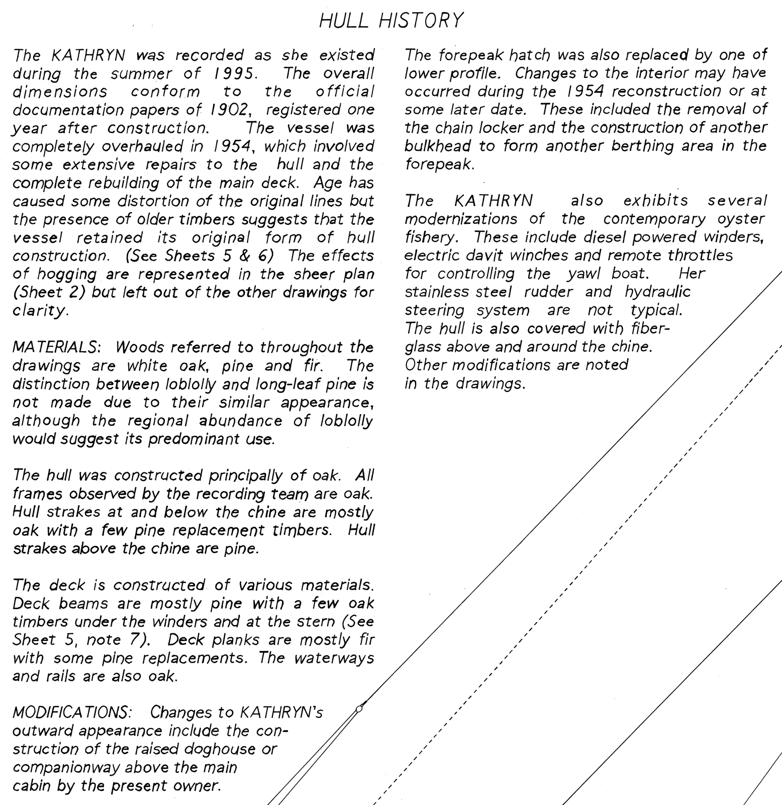

Original scan pixels: [1054, 602, 6225, 5920]; source SHA-256: fede6b7745aa3936961fd5b686034f624a1d56b7bd0f774192670cbb40c1dd9c.
Native lossless view · Raw OCR · Word coordinates/confidence · Manifest

HULL HISTORY The KATHRYN was recorded as she existed during the summer of 1995. The overall dimensions conform to the _ official documentation papers of 1902, registered one year after construction. The vesse/ was completely overhauled in 1954, which involved some extensive repairs to the hull and the complete rebuilding of the main deck. Age has caused some distortion of the original lines but the presence of older timbers suggests that the vessel retained its original form of hull construction. (See Sheets 5 & 6) The effects of hogging are represented in the sheer plan (Sheet 2) but left out of the other drawings for Clarity. MATERIALS: Woods referred to throughout the drawings are white oak, pine and fir. The distinction between loblolly and long-leaf pine is not made due to their similar appearance, although the regional abundance of loblolly would suggest its predominant use. The hull was constructed principally of oak. All frames observed by the recording team are oak. Hull strakes at and below the chine are mostly oak with a few pine replacement timbers. Hull strakes above the chine are pine. The deck is constructed. of various materials. Deck beams are mostly pine with a few oak timbers under the winders and at the stern (See Sheet 5, note 7). Deck planks are mostly fir with some pine replacements. The waterways and rails are also oak. MODIFICATIONS: Changes to KATHRYN's outward appearance include the con- struction of the raised doghouse or companionway above the main cabin by the present owner. The forepeak hatch was also replaced by one of lower profile. Changes to the interior may have occurred during the 1954 reconstruction or at some later date. These included the removal of the chain locker and the construction of another bulkhead to form another berthing area in the forepeak. The KATHRYN also exhibits several moderhizations of the contemporary oyster fishery. These include diesel powered winders, electric davit winches and remote throttles for controlling the yawl boat. Her stainless stee! rudder and hydraulic steering system are not typical. The hull is also covered with fiber- glass above and around the chine. Other modifications are noted in the drawings.